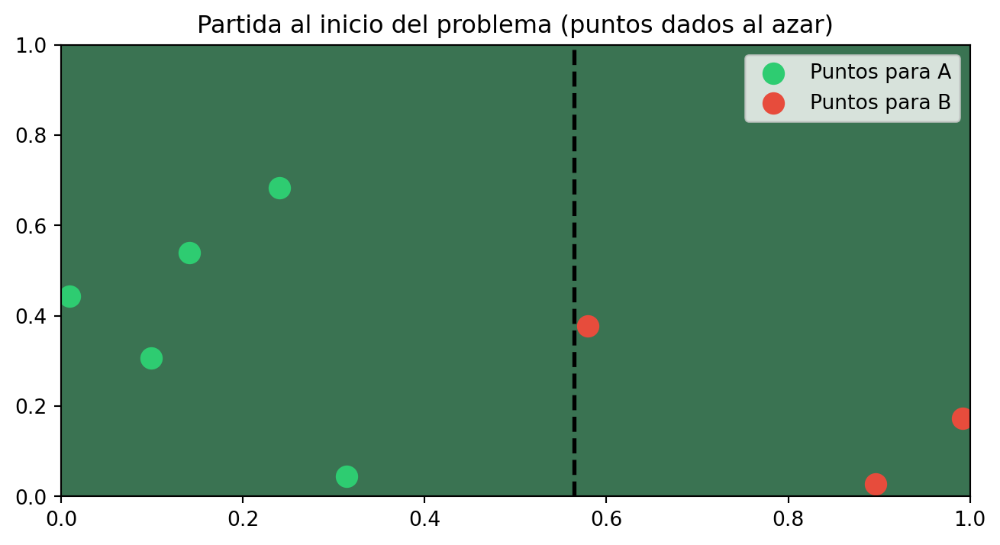

En muchos juegos por puntos, como el billar o el tenis de mesa, surge de manera natural la pregunta: dado el marcador actual, ¿qué probabilidad tiene cada jugador de ganar el partido? Si conociéramos exactamente la habilidad de cada jugador, el problema sería sencillo de resolver con probabilidad elemental. Sin embargo, en la práctica esa habilidad es desconocida y solo podemos inferirla a partir de los puntos ya jugados.
Este planteamiento da lugar al llamado Bayesian Billiards Problem, un ejemplo clásico que ilustra la diferencia entre el enfoque frecuentista y el bayesiano en estadística. En el escenario que estudiaremos, dos jugadoras A y B compiten por puntos independientes en una mesa de billar, en donde se lanza una bola de manera aleatoria la cual separa el lado de A (izquierdo) y el lado de la jugadora B (lado derecho), gana quien llega primero a 6, y el marcador actual es 5–3 a favor de A. A partir de este resultado parcial, queremos estimar la probabilidad de que B logre remontar y gane el partido.
Desde el punto de vista frecuentista, se suele estimar la probabilidad de que A gane un punto usando la frecuencia observada (5 de 8), y con ese valor se calcula la probabilidad de que B gane tres puntos consecutivos. En contraste, el enfoque bayesiano modela la habilidad de A como un parámetro desconocido con una distribución previa, que se actualiza con los datos observados para obtener una distribución posterior, y a partir de ella se promedia la probabilidad de que B gane el partido.
Enfoque frecuentista
Primero, tenemos el enfoque frecuentista, por lo que, partiendo de la información obtenida, sabemos que A tiene 5 puntos, B tiene 3 puntos y por ende, se han realizado 8 jugadas. Aquí se asume que la probabilidad de que A gane un punto es un parámetro fijo \(p\), y se estima con lo observado: \[p = \dfrac{5}{8} \rightarrow q = 1-p = \dfrac{3}{8}\]
Como la unica manera de que B gane es que realice 3 puntos seguidos tenemos que la probabilidad de que ocurra esto es: \[P(\text{B gane}) = \left(\dfrac{3}{8} \right)^3 = \dfrac{27}{512} \approx 0.0527\]
es decir, tenemos una probabilidad de \(5.27%\) de que la jugadora B gane este juego.
Enfoque bayesiano
Sin embargo, para el enfoque bayesiano, esto no es correcto, pues el valor de \(p\) ahora ya no es fijo, sino que se le da el tratamiento de una variable aleatoria en donde tenemos que: \[\bullet p \sim Beta(1,1) \text{y uniforme}\]\[\bullet A \text{ya ganó 5 y }B \text{ya ganó 3}\]
Por lo que ahora tenemos: \[p | datos \sim Beta(1+5,1+3) = Beta(6,4)\]
De aqui tenemos que la probabilidad gane este juego es: \[P(B \text{gana} | p) = (1-p)^3\]
La probabilidad bayesiana es el promedio posterior: \[P(B \text{gana} | datos) = E[(1-p)^3]\]
Pero como ya sabemos que \(p \sim Beta(6,4)\), entonces \[E[(1-p)^3] = \dfrac{4\cdot 5 \cdot 6}{10\cdot 11 \cdot 12}=\dfrac{1}{11}\approx 0.0909\]
Es decir, que desde el enfoque bayesiano tenemos una probabilidad de que B gane del \(9.09%\), es decir, casi el doble del enfoque frecuentista. Pero ¿Como sabremos quien tiene la razón? Para esto, haremós uso de la Simulación de Montecarlo y responder esta pregunta.
Simulación de Montecarlo
La idea es muy sencilla (al igual que el codigo): Vamos a tirar la bola de manera al azar en una mesa de billar, que, por comodidad tendrá una longitud de 1 y dependiendo donde caiga, ese será nuestro punto de separador, es decir, que una vez tengamos nuestra separación en la mesa, se vuelve a tirar la bola para saber si cae del lado izquierdo (lado de la jugadora A) o el lado derecho (de la jugadora B).
Si durante 8 jugadas llegamos al escenario inicial, es decir, que la jugadora A ha acumulado 5 puntos y B 3 puntos, entonces, podemos continuar con el juego para ver quien es el vencedor, realizando este mismo juego una cantidad n, donde n es un numero considerablemente grande (recordar que entre más grande, mejor)
Por último, contamos cuantas de esas partidas ideales (5-3), B salio victoriosa.
El codigó de python es el siguiente:
Ver código
import numpy as npimport matplotlib.pyplot as pltcontador =0n =10_000i =0while i < n: separador = np.random.random() bolas = np.random.random(8) jugador_A = np.sum(bolas < separador) jugador_B = np.sum(bolas >= separador)if jugador_A ==5and jugador_B ==3: i +=1while jugador_A <6and jugador_B <6: bola = np.random.random()if bola < separador: jugador_A +=1else: jugador_B +=1if jugador_B ==6: contador +=1plt.figure(figsize=(8, 4))ax = plt.gca()ax.set_facecolor("#3a7352")y = np.random.random(8)plt.scatter(bolas[bolas < separador], y[:5], color='#2ecc71', s=100, label='Puntos para A')plt.scatter(bolas[bolas >= separador], y[5:], color='#e74c3c', s=100, label='Puntos para B')plt.axvline(x=separador, color='black', linestyle='--', linewidth=2)plt.xlim([0,1])plt.ylim([0,1])plt.legend()plt.title(f"Partida al inicio del problema (puntos dados al azar)")plt.show()print(f"Numero de partidas: {n}")print(f"Numero de veces que gana A: {n-contador}")print(f"Numero de veces que gana B: {contador}")print(f"Probabilidad de que B gane: {contador/n}")

Numero de partidas: 10000
Numero de veces que gana A: 9098
Numero de veces que gana B: 902
Probabilidad de que B gane: 0.0902
Conclusión
Como se puede observar, el resultado es el mismo que lo que plantea la estadistica bayesiana (o al menos se acerca mucho), por lo que, una vez la simulacion de montecarlo nos enseña como muchas veces no necesitamos formulas que pueden resultar complicadas o tediosas de entender, sino entender realmente el problema y con un par de lineas de codigo resolver este tipo de incognitas.